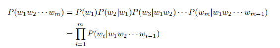
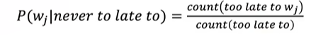
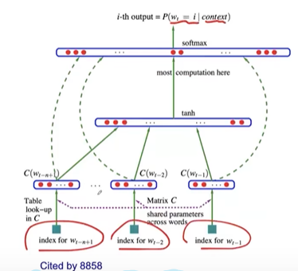

LLM-concept
# 大模型基本概念
# 目标
-
语言模型就是对自然语言的概率分布进行建模，即 P (w1 w2 w3 … wn)，计算这些词构成的这句话成为合法的一句话的概率
-
计算下一个词的概率 P (wn | w1 w2 w3… wn-1)

# 发展历程
从 n-gram:

到 neural language model: 每个词都映射成一个低维向量

再到后面的 transformer 出现，transformer 的出现，NLP 进入了预训练微调阶段，也就是只需把预训练好的模型用特定任务的训练集去微调（fine-tune），即可对下游任务进行操作，这种模型是 PLM。
随着 OpenAI 发布的 1750 亿个参数（GPT-3），开启 LLM 时代
# 问题发现
・大模型（如 GPT-3）参数量极大（1750 亿 +），传统 “预训练 + 微调” 范式成本过高（需为每个任务调整海量参数）。
-
解决方案：
・开发新范式（ICL/Prompt），通过输入指令或示例直接引导模型，避免微调。・但要让模型支持这种范式，必须在预训练阶段就赋予它相关能力（如理解指令、模仿示例）。
-
模型构建的关键：
・预训练阶段：用海量多样化数据（图书、网页、指令数据等）训练模型，使其隐式掌握 ICL/Prompt 所需的能力（如任务模式识别、指令遵循）。・后续阶段（SFT+RLHF）：进一步优化模型对新范式的响应质量（如更精准的指令理解、更安全的输出）。
-
结论：
・新范式（ICL/Prompt）依赖特定训练的模型：只有通过大规模预训练（及后续优化）的模型，才能直接通过上下文或指令适配任务，而传统小模型无法做到这一点。
# LLM 的构建流程
- 预训练： 利用海量训练数据构建多样化内容，构建基础模型 ——> 对长文本建模，使模型具有语言生成能力
- 有监督微调 SFT：用少量高质量数据集，通过有监督训练使模型具有问答、写作的能力，数据包括：用户输入提示词和对应理想输出结果
- 奖励建模 RM：训练一个能够判断文本质量的裁判，对同个提示词，比较 SFT 生成的多个输出的质量
- 强化学习 RLHF (human feedback)：基于 RM，优化 SFT 模型
SFT 相当于学生学会答题，RM 是评分老师，判断 answer 好坏，RLHF 是学生根据老师评分改进答题策略
# 补充
N-gram 模型详解
N-gram 是一种基于统计的语言模型，用于预测或生成文本中的下一个词，其核心思想是：一个词的出现概率依赖于它前面的有限个词（n-1 个词）。它是自然语言处理（NLP）中最基础且广泛使用的模型之一。
N-gram 的定义：
・指文本中连续的 n 个词（或字符）组成的序列。
・例如：
1 | ◦ Unigram (1-gram): "the"、"cat"、"sat"（单个词）。 |
・核心假设：
・马尔可夫假设：当前词的概率仅依赖于前 n-1 个词，而非整个历史。
1 | ◦ 例如，Bigram 模型认为 `P(sat | the cat)` ≈ `P(sat | cat)`，忽略更早的上下文。 |
如何计算概率？
N-gram 通过统计语料库中词序列的频率来估计概率：
计算 P(sat | the cat) ：
P(sat∣the cat)=Count(“the cat”)Count(“the cat sat”)
若语料中 “the cat” 出现 100 次，“the cat sat” 出现 30 次，则 P(sat | the cat) = 0.3 。
N-gram 的优缺点
| 优点 | 缺点 |
|---|---|
| 简单高效，计算速度快。 | 无法捕捉长距离依赖（如 “The cat… sat” 相隔较远时）。 |
| 小规模数据即可训练。 | 数据稀疏性（罕见 n-gram 概率不准确）。 |
| 曾广泛用于机器翻译、拼写检查等任务。 | 无法理解语义（仅统计共现频率）。 |